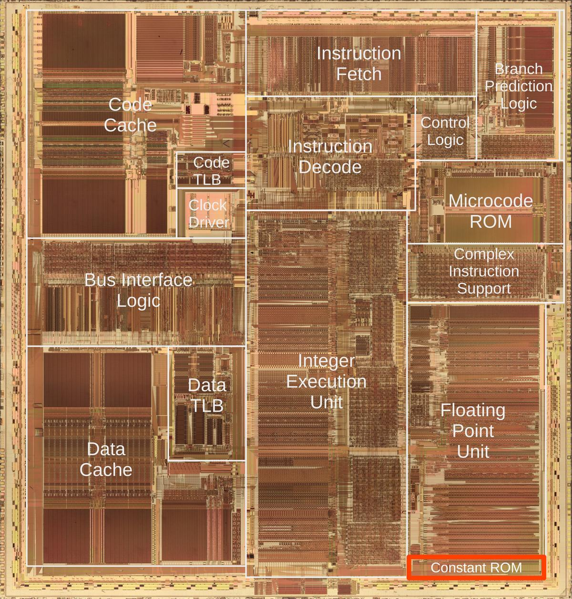
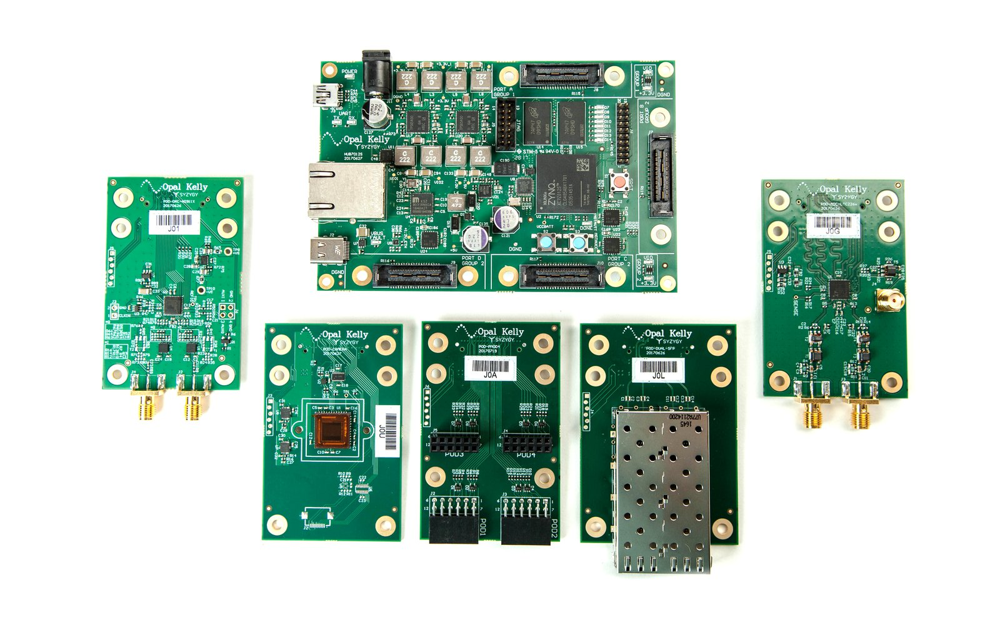
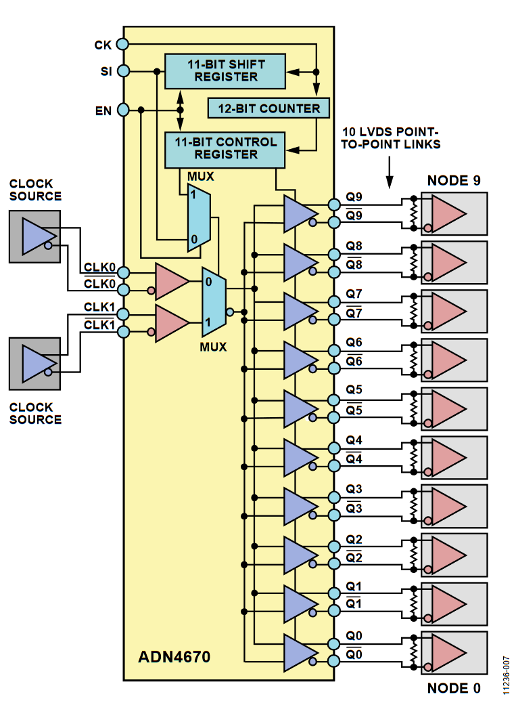

2025-01
2025-01-24
openbehavior

The Future is Open Source Tools Paper pdf
DDR3 Memory

PCIE Ref Clock Inpout to FPGA

2025-01-22
Pentium CPU

Wavelet
2025-01-21
晶片技術大突破！Cerebras 如何實現比一般晶片多 100 倍的缺陷容忍度？ | T客邦

DMA : Streaming DMA and Coherent DMA

Verse.ai

MKV File Format
Pi Camera High Frame Rate
How To Record Video At 660 FPS On A $6 Raspberry Pi Camera - Part 1
How To Record Video At 660 FPS On A $6 Raspberry Pi Camera - Part 2
2025-01-20
Intan ADC Missing Code and Missing Decison Level
Intan ADC Missing Code and Missing Decison Level
Missing Decision Level

Missing Code

Before Software Calibration

After Software Calibration

Scalogram
spkit.github.io wavelet analysis

2025-01-16
A 2 GHz oscilloscope for everyone
https://www.crowdsupply.com/andy-haas/haasoscope-pro
https://github.com/drandyhaas/HaasoscopePro
SYZYGY Interface
SYZYGY Interface syzygyfpga.io



Paper Reading 2025-01-16
Open_Ephys_electroencephalography_Open_Ephys_EEG_A_modular_low-cost_open-source_solution_to_human_neural_recording Paper Link
Wearable_EEG_electronics_for_a_Brain-AI_Closed-Loop_System_to_enhance_autonomous_machine_decision-making Paper Link
PyFTDI for Intan
2025-01-13
Evolutionary Neural Coding Lab

Github EvolutionaryNeuralCodingLab
Site EvolutionaryNeuralCodingLab
Paper Reading 2025-01-13
ReptiLearn: An automated home cage system for behavioral experiments in reptiles without human intervention Paper Link
2025-01-03
LVDS Clock Distribution
Analog Device AN-1177
